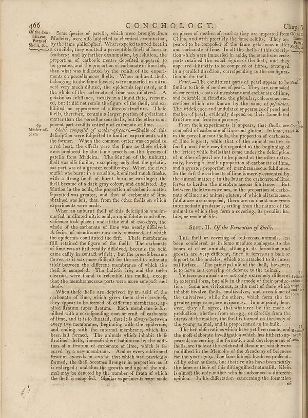

Scan ID britannica:309f765b1ecc83e0a7f7762e44b4a927a7555443:train:473
Image SHA-256 4ab88a7103cd8f6c0c4f49cde0370890e3cbca2af72a6a90f8e7db56d053c32d
Status: ok. Running header: none (none). Removed page furniture: Page-header: 466.
PDF · raw Parse reply · LaTeX
Entries: CONCHOLOGY

| # | Class | Box | Parse 3.5 | Used text | Source |
|---|---|---|---|---|---|
| 1 | Section-header | [0.4023, 0.0484, 0.7021, 0.0688] | C O N C H O L G Y. | CONCHOLOGY. | super_vl |
| 2 | Caption | [0.9141, 0.0508, 0.9902, 0.0695] | Chap 1 | Chap. 1 | super_vl |
| 3 | Text | [0.0908, 0.0703, 0.5498, 0.2961] | Of the Com Slesa, Misca Madera, were alo fujected to chemical examination, by the fame philosopher. When needed tested best in a crochets, they emitted a perpetraphie fnell of them or feathers, and by further examination, by foliation, the proportion of carbonic matter degraded appeared to be greater, and the proportion of carbonate time lobe, than what was indicated by the refut of the experiments on pencilhenures fields. When natural shells belonging to the fame species, were amended in nitric acid very much diluted, the epidermis separated, and the whole of the carbonate of lime we differed | Some species of patella, which were brought from Madeira, were also subjected to chemical examination, by the same philosopher. When exposed to a red heat in a crucible, they emitted a perceptible smell of horn or feathers; and by farther examination, by solution, the proportion of carbonic matter depleted appeared to be greater, and the proportion of carbonate of lime less, than what was indicated by the result of the experiments on porcellaneous shells. When unburnt shells belonging to the same species, were immersed in nitric acid very much diluted, the epidermis separated, and the whole of | super_vl |
| 4 | Text | [0.0889, 0.2938, 0.1602, 0.3281] | My Mother of peat. | 69 Mothers of pearl. | super_vl |
| 5 | Text | [0.1611, 0.293, 0.5508, 0.4961] | _Health composed of nuclear-depart—Shells of this description were subjected to familiar experiments with this former. When the common oyster was expelled to a red heat, the effects were the fans as those which were produced by the fame processis on the facies of patches from Madeira. The foliation of the hallmark shell was also funlier, except only little the gelatinous parts are of a greater confidence. When the river, muffel was burnt a crushing, the melted much make, with a frongu find all burnt born or cartilage; the shell become of a dark gray colour, and exfoliated. By foliation in the | Shells composed of mother-of-pearl.—Shells of this description were subjected to similar experiments with the former. When the common oyster was exposed to a red heat, the effects were the same as those which were produced by the same process on the species of patella from Madeira. The solution of the unburnt shell was also similar, excepting only that the gelatinous part was of a greater consistency. When the river mussel was burnt in a crucible, it emitted much smoke, with a strong smell of burnt horn or cartilage; the shell became of a dark gray colour, and exfoliated. By solution in the ac | super_vl |
| 6 | Text | [0.1592, 0.4969, 0.5488, 0.6906] | When an unburnt fluef of this description was im-mected in diluted nitric oxide, a rapid foliation and effir-vicosecond took place, and at the end of two days the whole of the carbonate of lime was nearly diffused. A feries of means now only remnants, of which the epidemics constituted the full. These membranes fill retained the figure of the shell. The carbonate of lime was a flat readily diffused, because the acid came easily to contain with it; but the proceeds became flower, as it was more difficult for the acid to indicate itself between the different membranes of which the shell is compe | When an unburnt shell of this description was immersed in diluted nitric acid, a rapid solution and effervescence took place; and at the end of two days, the whole of the carbonate of lime was nearly dissolved. A series of membranes now only remained, of which the epidermis constituted the first. These membranes still retained the figure of the shell. The carbonate of lime was at first readily dissolved, because the acid came easily in contact with it; but the process became slower, as it was more difficult for the acid to insinuate itself between the different membranes of which the shell is | super_vl |
| 7 | Text | [0.1582, 0.6914, 0.5479, 0.9141] | When these fields are deprived by an acid of the carbonate of lime, which gives them their birders, they appear to be formed: of different membranes, ap- pled fratum fuer fratum. Each membranes is fur- milled with a corresponding coarse cruml of carbonate of lime, and it is foisted, that it is always between every two membranes, beginning with the epidermis, and ending with the internal membrane, which has been latformed. The animals which inhabit both fleaified flesh, precede their habitation by the addi-tion of a fratum of carbonate of lime, which is fe-cured by a new membrane. And as every | When these shells are deprived by an acid of the carbonate of lime, which gives them their hardness, they appear to be formed of different membranes, applied stratum super stratum. Each membrane is furnished with a corresponding coat or crust of carbonate of lime, and it is so situated, that it is always between every two membranes, beginning with the epidermis, and ending with the internal membrane, which has been last formed. The animals which inhabit these stratified shells, increase their habitation by the addition of a stratum of carbonate of lime, which is secured by a new membrane. And | super_vl |
| 8 | Text | [0.5576, 0.0742, 0.9844, 0.1859] | on pieces of mother of pearl as they are imported from China, China, and with precisely the fame refute. They ap- peated to be compelled of the fame grafiations matter such as carbonate of lime. In all the thiefs of this description which were named in aside, the membranes parts retained the each figure of the field, and they appeared different to be compelled of fibres, arranged in a parallel direction, correponding to the configuration of the flank. | on pieces of mother-of-pearl as they are imported from China, and with precisely the fame refults. They appeared to be composed of the fame gelatinous matter and carbonate of lime. In all the shells of this description which were immersed in acids, the membranaceous parts retained the exact figure of the shell, and they appeared distinctly to be composed of fibres, arranged in a parallel direction, corresponding to the configuration of the shell. | super_vl |
| 9 | Text | [0.5586, 0.1867, 0.9834, 0.2945] | _Pearl_--The constituent parts of pearl appear to be Pearl familiar to thief of mother-of-pent. They are compelled concerned costs of membranes and colonies of lines, and resemble in firstature the globular, calcareous con-cretions which are known by the name of _phylidae._ The influence and produced appearance of pearl and another-of-past, evidently depend on their lamellated fracture and femitran/parency. | Pearl.—The constituent parts of pearl appear to be familiar to those of mother-of-pearl. They are composed of concentric coats of membrane and carbonate of lime, and resemble in structure the globular, calcareous concretions which are known by the name of pisolites. The iridescence and undulated appearance of pearl and mother-of-pearl, evidently depend on their lamellated structure and semitransparency. | super_vl |
| 10 | Text | [0.5557, 0.2953, 0.9482, 0.5258] | From their experiments, it appears, that shells are complex composed of surface of lime and gluten. In formas as pure in the porcellaneous shells, the proportion of carbonate. Time is great, while that of the animal matter is finally, and the mean one regarded as the beginning of the feries; while shells that come under the definition of mother-of-post are to be placed into the extra-mity, having a smaller proportion of carbonate of lime, and a greater proportion of membranous fusblance. It is the first the carbonate of lime is merely consumed by the animal matter; in the better the carbonate | From their experiments, it appears, that shells are composed of carbonate of lime and gluten. In those as pure in the porcellaneous shells, the proportion of carbonate of lime is great, while that of the animal matter is small; and these may be regarded as the beginning of the series; while shells that come under the description of mother-of-pearl are to be placed at the other extremity, having a smaller proportion of carbonate of lime, and a greater proportion of membranaceous fulblance. In the first the carbonate of lime is merely cemented by the animal matter; in the latter the carbonate of | super_vl |
| 11 | Section-header | [0.6104, 0.5367, 0.8916, 0.5539] | Sect. II. _Of the Formation of Shells._ | Sect. II. Of the Formation of Shells. | super_vl |
| 12 | Text | [0.5566, 0.5609, 0.9473, 0.6523] | Tuz thehell or covering of telacous animals, has been considered as in fome marine analogues to the bones of other animals, although it formation and growth are very different, since it feres as a hole coupport to the mulches, which are attached to its inter-fortified. The principal side of the shell, however, is to force as a covering or defense to the animal. | The shell or covering of testaceous animals, has been considered as in some measure analogous to the bones of other animals, although its formation and growth are very different, since it serves as a base or support to the muscles, which are attached to its internal surface. The principal use of the shell, however, is to serve as a covering or defence to the animal. | super_vl |
| 13 | Text | [0.5547, 0.6531, 0.9854, 0.7789] | Telacous animals are not only extremely different in external form, had alls in the mode of their problem. Limtion. Some are viviparous, as the motif of their which people inhabit bivalve shells, multivalves, and even forms of the unitvives, while the others, which form the fire greetate proportions are ostropus. In non point, how ever, they all agree, that whatever be the mode of probilution, whether from an egg, or directly from the uterus of the mother, the fluid is formed on the body of the young animal, and is propontioned to its bulk. | Telacous animals are not only extremely different in external form, but also in the mode of their production. Some are viviparous, as the most of those which inhabit bivalve shells, multivalves, and even some of the univalves; while the others, which form the far greater proportion, are oviparous. In one point, however, they all agree, that whatever be the mode of production, whether from an egg, or directly from the uterus of the mother, the shell is formed on the body of the young animal, and is proportioned to its bulk. | super_vl |
| 14 | Text | [0.5537, 0.7805, 0.8594, 0.8063] | The bell defenders who have yet been made, and made the most elaborate investigation which has hitherto ophawvel peace, concerning the formation and development of iron. | the young animal, and is proportioned to its The best observations which have yet been the most elaborate investigation which has | super_vl |
| 15 | Text | [0.5527, 0.807, 0.9863, 0.9133] | balls, are holes of the colonized Heamur, which were published in the Memoirs of the Academy of Sciences for the year 1790. The fate should be beenpecucul- and by other authors, but their orbits have been mainly the arms so thole of this distinguished naturalidh. Klein is almost the only author who has advanced a different opinion. In his dissertation concerning the formation | the most elaborate investigation which has hitherto ap- peared, concerning the formation and development of shells, are those of the celebrated Reaumur, which were published in the Memoirs of the Academy of Sciences for the year 1709. The fame subject has been prosecuted by other authors, but their results have been nearly the fame as those of this distinguished naturalist. Klein is almost the only author who has advanced a different opinion. In his dissertation concerning the formation | super_vl |
Britannica scans: National Library of Scotland, CC0 1.0. Wikipedia text: Wikipedia contributors, CC BY-SA 4.0, revision links on each page. Generated 2026-10-18T13:26:14+00:00.